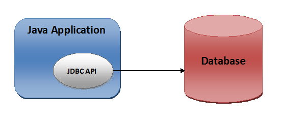

Merhaba arkadaslar bugun Javada veritabani islemlerini yapmamizi saglayan JDBC Api sinden bahsedecegim.JDBC uygulama ile veritabanı arasında haberlesmemizi saglar.Gelin bu baglama isinin nasıl olduguna bakalım;
Veritabanına bağlanıp işlemlerimizi yapabilmemiz için 4 adıma ihtiyacımız var diyebiliriz.
- Bağlantı nesnesini al ve bağlantı aç.
- Sorguyu hazırla ve ilgili yöntemi kullanarak veri tabanına gönder.(Statement)
- Gelen veriyi al ve işle.
- Sonucu döndür ve bağlantıyı sonlandır.
Baglantı alma işlemi : JDBC api içerisindeki DriverManager sınıfındaki getConnection() methodu kullanılarak yapılmaktadır.Bu method paremetre olarak veritabanı urlsini,kullanıcı adını ve şifresini alıp geriye Connection nesnesi döndürmektedir.
Connection conn = DriverManager.getConection(DB_URL,USERNAME,PW);java.sql sınıflarının import edildiğinden emin olun.Veri tabanı baglantımız şuanda gerçekleşti.
Statement nesnesi oluşturup executeQuery() methoduna sql kodumuzu paremetre olarak göndermemiz gerekmekte.Statement nesnesi connecion nesnesinden oluşturulmaktedır.Zaten yukarıda hali hazırda getConnection() methodundan dönen connection nesnemiz var.JDBC sorgu çalıştırmak için özel ifadeler kullanılır.Statement,PreparedStatement ve CallableStatement.
Statement stm = conn.createStatement();
ResulSet results = stm.executeQuery("Select * from user");executeQuery() methodu geriye sorgulama sonuçlarını içeren ResultSet nesnesi döndürecektir.Bu resultset nesnesini satır ve sutundan oluşan tablolar gibi düşünebiliriz.Ve bu verileri içerisinde getString(“sutunADi”) methodunu kullanarak ayiklama islemini gerceklestirebiliriz.
while ( results.next() ) {
System.out.println(results.getString("id"));
System.out.println(results.getString("name"));
System.out.println(results.getString("okulNo"));
}Son olarak işlemimiz bittiği için veritabanını kapatmamız gerekmekte.
conn.close();Özet olarak kısaca birde bu kullandıgımız sınıfların/interfacelerin ne iş yaptıgına bakalım;
DriverManager : JDBC sürücüsünün yüklenmesi ve veritabanı urlsini olarak veritabanına bağlantı kurulmasını sağlar. ( Singleton bir sınıftır. )
Connecion Interface : Veritabanı bağlantı bilgilerinin tutulmasını sağlar.Veri tabanına veri girilmesi sonuçların alınması vs. bu interface i kullanan sınıflar aracılıgı ile yapılır.
ResultSet Interface : Statement üzerinde çalışan SQL sorgusu geriye resultset nesnesi dönecektir.Bu nesneyi işleyerek verilerimizi kullanabiliriz.
Bu yazimi burada sonlandiriyorum arkadaslar ogrendikce paylasmaya devam edicegim.
Mutlu ve esen kalın :) .